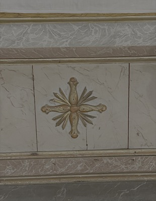

Virgen del Rosario
Toca para ver la ficha

Santa Catalina de Siena
Toca para ver la ficha

Santo Domingo de Guzmán
Toca para ver la ficha

San Marcial
Toca para ver la ficha

San Pío V
Toca para ver la ficha

Cruz radiada
Toca para ver la ficha